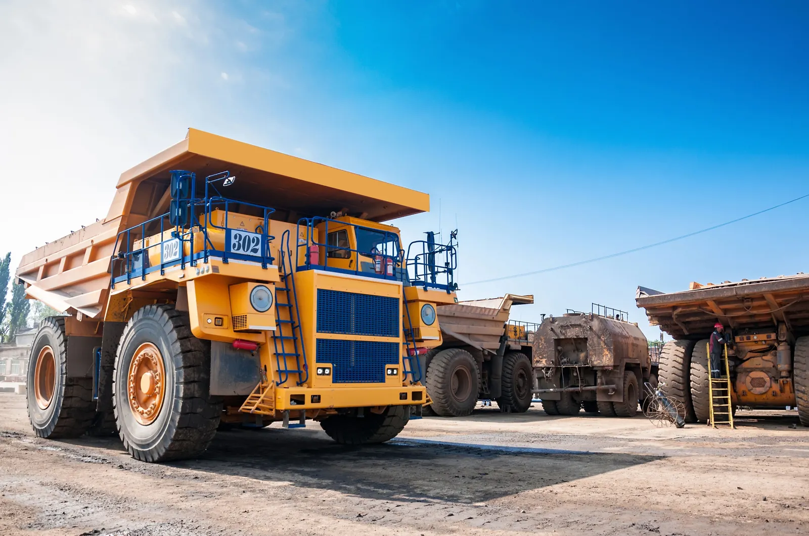
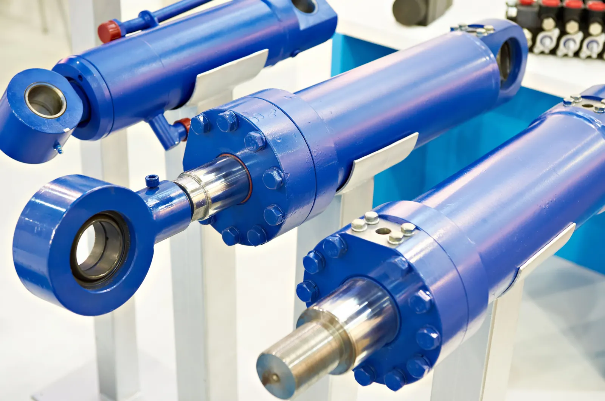
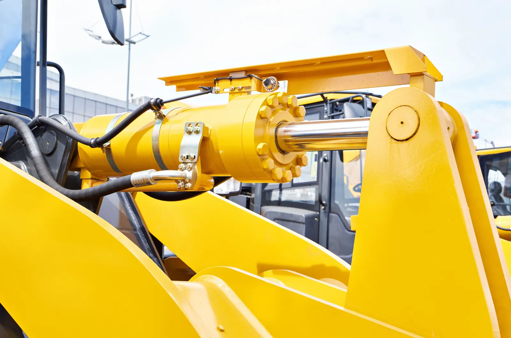
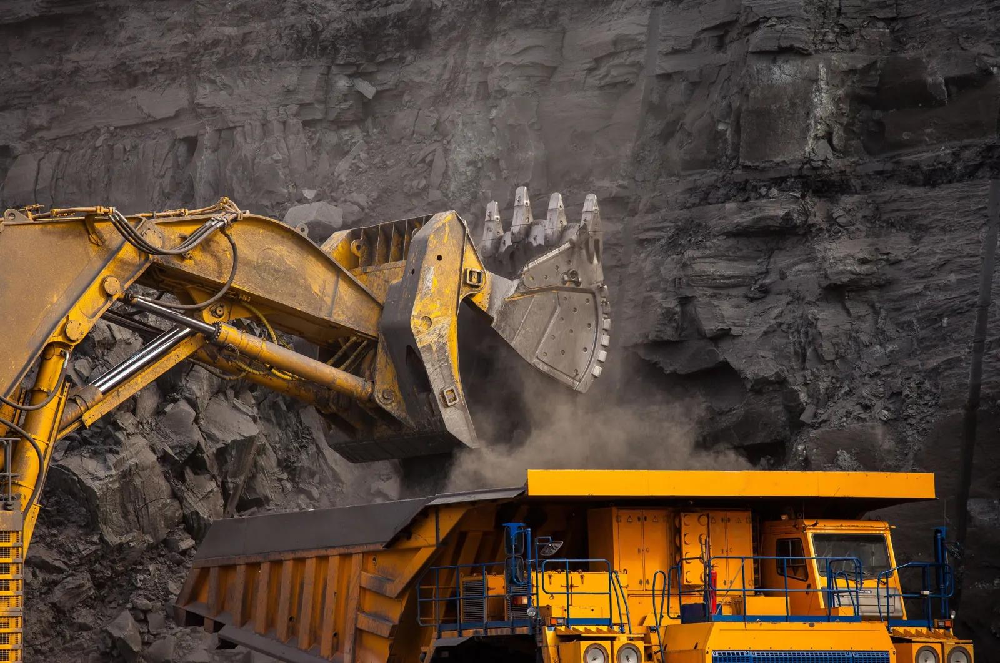

TYROTEC SOLUTIONS / 01
SPARE PARTS SUPPLY
Comprehensive maintenance spare parts sourced from reputable local and global suppliers.
ENQUIRE ABOUT THIS SERVICEFrom replacement components to data-led support, Tyrotec helps you manage the performance of critical assets.

Comprehensive maintenance spare parts sourced from reputable local and global suppliers.
ENQUIRE ABOUT THIS SERVICE
Hydraulic pumps, motors, valves, electrical components and wear parts for demanding mining applications.
ENQUIRE ABOUT THIS SERVICE
Component repairs and equipment rebuilds to help extend asset lifecycles and support equipment availability.
ENQUIRE ABOUT THIS SERVICE
Consignment and other commercial agreements designed to support spare parts supply requirements.
ENQUIRE ABOUT THIS SERVICEData analytics to improve spare parts consumption and lifecycle management.
ENQUIRE ABOUT THIS SERVICE